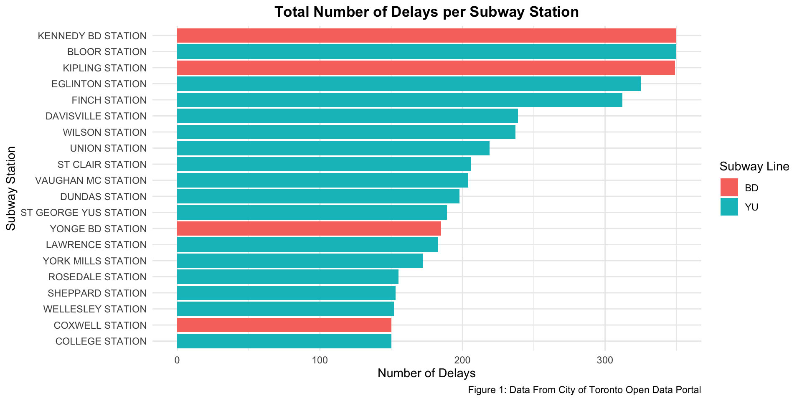
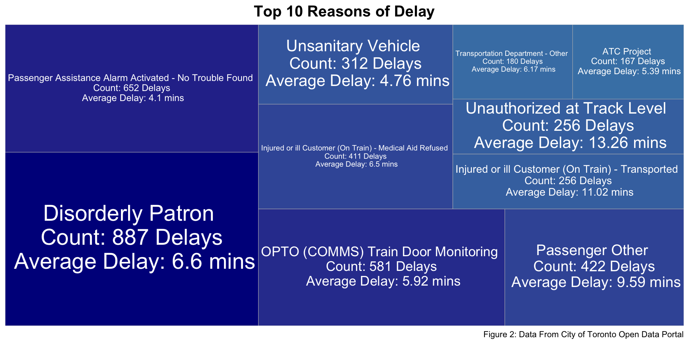
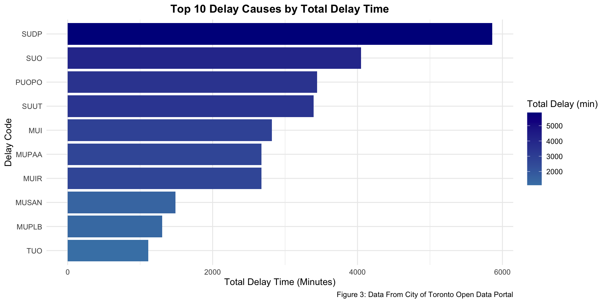
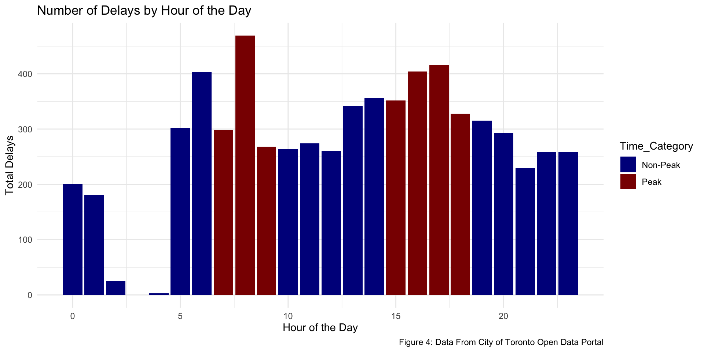
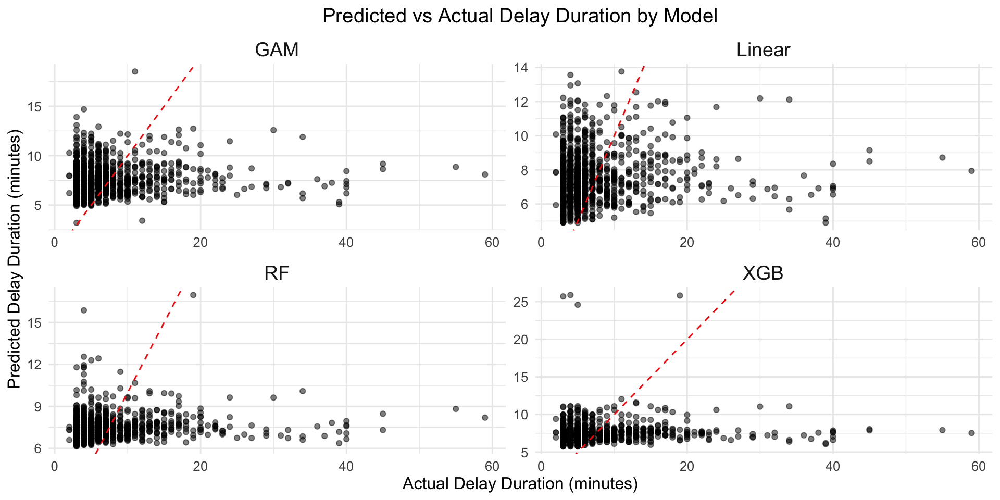
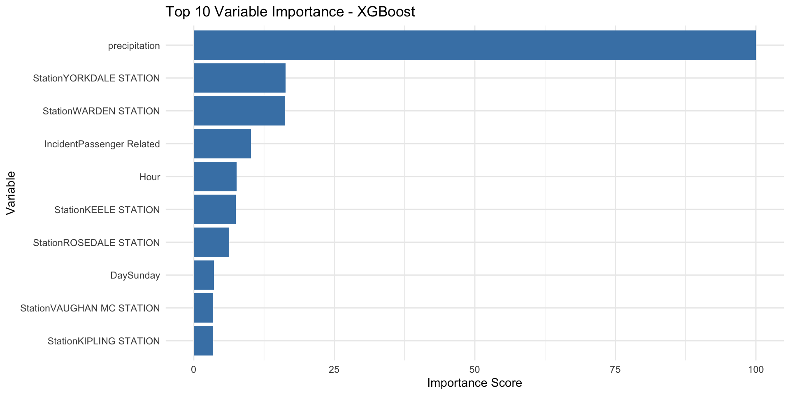
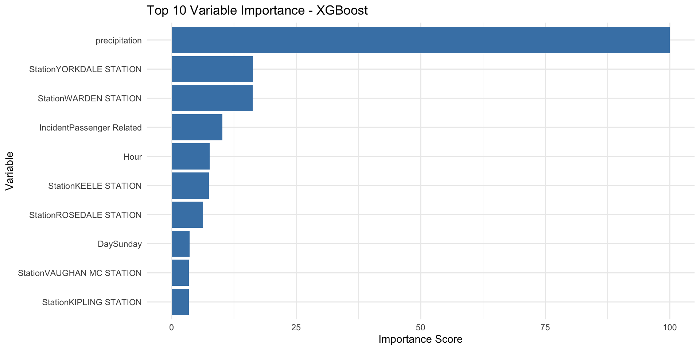

Toronto Subway Delay Analysis: Causes, Timing, and Line-Specific Patterns
Avi Walia
March 14, 2025
GitHub Repository: Avi04w/TTC-Subway-Delays
Introduction
The Toronto Transit Commission (TTC) subway system is a critical part of Toronto’s public transportation network, servicing over a million riders daily across multiple lines. However, subway delays have been a persistent issue, impacting the efficiency and reliability of the service. Understanding the primary causes of these delays and how they vary by time of day and across different subway lines is essential for improving service quality and enhancing passenger experience.
This study aims to investigate the following questions:
- What are the primary causes of subway delays in Toronto and how do these delays vary by subway line/station?
- Can we estimate the duration of subway delays across Toronto’s TTC system based on different predictors?
Hypothesis:
Question 1:
- Hypothesis 1: Mechanical issues are the most common causes of subway delays in Toronto.
- Hypothesis 2: Delays are more frequent during peak hours (7-9 AM and 3-7 PM) compared to non-peak hours.
- Hypothesis 3: The Yonge-University line experiences more frequent delays than other lines due to higher passenger volumes and longer track lengths. Bloor-Yonge and Union stations will have the most and longest delays on this line since they are the most crowded stations in terms of ridership.
Question 2:
- Hypothesis: I believe that the model we fit to predict length of delays will depend on: station, type of delay, hour of day, and weather.
To address these questions and test the hypotheses, we will utilize the TTC Subway Delay Data provided by the City of Toronto’s Open Data portal as well as the Open-Meteo API to get Toronto weather data. The TTC dataset contains detailed information on delay incidents for the year 2024, including:
- Delay Codes and their descriptions indicating the reasons for delays.
- Time Stamp Information such as date, time, and day of the week.
- Location Details including the station and subway line affected.
- Duration of Delays measured in minutes.
The data was acquired using the City’s Open Data API. By exploring and analyzing this dataset, we seek to identify patterns and trends in delay causes, assess peak times for delays, and determine if specific lines and/or stations are more prone to certain types of delays. This analysis will inform potential strategies for mitigating delays and improving the TTC’s operational efficiency.
The OpenMeteo data contains:
- Temperature: Hourly temperature data (in Celsius).
- Precipitation: Hourly precipitation (rain and snowfall in mm).
The data was acquired from the Open-Meteo Archive Data API. The API was called with the geographical coordinates for Toronto and contains hourly weather data for the city. The data will be used in a predictive model to answer Question 2.
Methods
Data Acquisition
The dataset used in this analysis was obtained from the City of Toronto Open Data Portal using the Open Data API. The data includes all recorded subway delays in Toronto for the year 2024, along with the delay codes, time, location, and other metadata. Additionally, a delay code definitions dataset was obtained from the same API and this was merged with the original data to provide description of each delay type. Weather data was included from the Open-Meteo API as mentioned above.
The extracted data includes:
- Time Stamp Information (Date, Time, Day of Week, Hour of Delay)
- Location Details (Station, Subway Line, Direction of Train)
- Delay Duration (Minutes Delayed)
- Delay Cause (Codes and Descriptions)
- Subway Car Details (Vehicle ID)
- Weather Data (Temperature, Precipitation)
Data Cleaning and Wrangling
Several process steps were applied to clean and prepare the data for analysis.
- Filtering Out Non-Delays and Multi-Station Delays
- Some records had a delay of 0 minutes (or None). We are not interested in these incidents as they do not actually effect commute times for riders. This removed many of the columns with missing values.
- Some delays were TTC wide or spanned multiple stations. We did not include these as there is no way to pinpoint the cause of these delays. This was done using REGEX to remove values that included “TO”, “TOWARD”, or “-”.
- Handling Missing Values:
- The rest of the columns with missing information were removed.
- Column Type Formatting:
- The Minutes Delayed was a char column, this was converted to int
- The Time column was originally formatted as HH:MM and was converted to hms.
- The Date column was converted from a character to Datetime.
- An extra categorical column was added, distinguishing between peak and non-peak times.
- Merging Delay Codes Information
- The delay codes were matched with their corresponding descriptions from the delay code definitions dataset.
- The weather data at the time of each delay was also included. The data for the exact time is not the data set, however, it could be merged based on the floor of the delay time (if the delay happened at 4:24 PM, we got the weather data for 4:00 PM).
- Erroneous Data and Outliers
- There is some data that was incorrectly inputted. One such example is that Warden station is once listed as being on the Yonge-University Line when it is actually on the Bloor-Danforth Line.
- There is a delay that lasted 6 hours that started at 4am. This is a massive outlier that is not a common occurrence (or even happened a second time). We can ignore this point as it is not indicative of any trends that we are trying to find.
- Stations along the Sheppard line were not included as there are not enough observations to make significant conclusions about any results.
There are 9178 observations and 16 variables for each observation.
Question 1: Delay Analysis
Exploratory Data Analysis (EDA)
To understand the nature of the subway delays, the following initial analyses were performed:
- Summary Statistics:
- Calculated the total number of delays and average delay duration at each station.
- Identified the most common delay causes and their frequency.
- Visualizations:
- Treemap: Delay reasons visualized in proportional blocks.
- Bar Chart: Number of delays per subway line and station.
- Time-Based Analysis:
- Created peak (7-9 AM, 3-7 PM) vs non-peak delay summaries.
- Examined how delay frequencies change by the hour.
Prelimary Results
We can first look at the total delays and average delay duration by station:
| Station | Total Delays | Average Delay Time |
|---|---|---|
| KENNEDY BD STATION | 353 | 5.968839 |
| KIPLING STATION | 351 | 6.347578 |
| BLOOR STATION | 350 | 6.311429 |
| EGLINTON STATION | 325 | 6.596923 |
| FINCH STATION | 312 | 6.631410 |
| DAVISVILLE STATION | 242 | 8.033058 |
| WILSON STATION | 237 | 6.413502 |
| UNION STATION | 219 | 6.643836 |
| ST CLAIR STATION | 207 | 6.830918 |
| VAUGHAN MC STATION | 204 | 5.411765 |

From this, we can see that Kipling, Bloor, Kennedy, Eglinton, Finch, St George, and VMC stations have the highest number of delays. These are all either transfer stations or are terminal stations (with the exception of Eglinton which is one of the busiest stations and the site of a future transfer station). We can also see that more Yonge-University line stations have have a large amount of delays, Kipling and Kennedy, which are are on the BD line have the most and third most delays. We can further look into this by exploring the types of delays that are occurring at stations.
| Code Description | Count | Average Delay Time |
|---|---|---|
| Disorderly Patron | 887 | 6.603157 |
| Passenger Assistance Alarm Activated - No Trouble Found | 652 | 4.101227 |
| OPTO (COMMS) Train Door Monitoring | 581 | 5.922547 |
| Passenger Other | 422 | 9.592417 |
| Injured or ill Customer (On Train) - Medical Aid Refused | 411 | 6.503650 |
| Unsanitary Vehicle | 312 | 4.762821 |
| Injured or ill Customer (On Train) - Transported | 256 | 11.015625 |
| Unauthorized at Track Level | 256 | 13.257812 |
| Transportation Department - Other | 180 | 6.172222 |
| ATC Project | 167 | 5.389222 |

The top reasons for subway delays in Toronto seem to be passenger-related incidents, with “Disorderly Patron” being the most frequent cause, accounting for 157 delays with an average delay of 6.85 minutes. Other notable causes include Passenger Assistance Alarm Activation (72 delays, 4.11 min avg) and OPTO (COMMS) Train Door Monitoring (50 delays, 6.9 min avg).
We can also look at which delays took the most time total:

| Code | Code Description |
|---|---|
| SUDP | Disorderly Patron |
| SUO | Passenger Other |
| PUOPO | OPTO (COMMS) Train Door Monitoring |
| SUUT | Unauthorized at Track Level |
| MUI | Injured or ill Customer (On Train) - Transported |
| MUPAA | Passenger Assistance Alarm Activated - No Trouble Found |
| MUIR | Injured or ill Customer (On Train) - Medical Aid Refused |
| MUSAN | Unsanitary Vehicle |
| MUPLB | Fire/Smoke Plan B - Source TTC |
| TUO | Transportation Department - Other |
The top delay causes by total delay time highlight disorderly patrons as the most significant issue, causing over 1,000 minutes of delays throughout the year. Other major contributors include unauthorized people at track level, and injured or ill customers, each accumulating several hundred minutes of delays. Passenger-related incidents, including assaults, alarms, and other disruptions, collectively contribute to substantial downtime. The difference we see with this and the last visualization is that a few of the most commonly occurring delays, such as the passenger alarm being activated and unsanitary vehicle are not in the top 10 of total delay time since the average time for those delays is much less.
Finally, we can view the occurrence of delays distributed by the time of day at which they occur.
| Time_Category | Total Delays | Average Delay Time | Average Number of Delays |
|---|---|---|---|
| Non-Peak | 3965 | 7.41 | 283.2143 |
| Peak | 2535 | 7.01 | 316.8750 |

There is no data for 3 and 4 am as the subway is closed for those hours. There is a major peak in the number of delays during the afternoon (between 2 and 4 pm), with the highest delays occurring around 3pm. What is interesting is that while the number of delays is much higher during peak hours, the average time of each delay is almost the same.
Summary
This analysis of TTC subway delays has provided several key insights into delay causes, timing patterns, and station-specific trends. The most frequent delay and the delay that has wasted the most amount of time this year is Disorderly Patrons, accounting for 157 recorded delays and taking a total of 1075.45 hours, much more than any other delay type. Other common delay types include passenger assistance alarms being activated, train door monitoring issues, and medical emergencies. However, when examining total delay time, disruptions such as unauthorized people at track level and injured or ill customer incidents accumulate significantly more system downtime, despite occurring less frequently.
in terms of time-based patters, delays are more frequent during peak hours (7-9 AM, 3-7 PM) when the TTC is running more trains, with a noticeable spike at 3 PM. Interestingly, while peak hours have more delays, the average duration of each delay is similar to non-peak periods, suggestions that the nature of delays remains relatively consistent through the day. Additionally, certain stations such as Kipling, Bloor, Kennedy and Finch experience the highest number of delays, many of which are near major transfer or terminal stations.
Question 2: Predictive Modelling
In the second phase of this project, I aim to develop and compare multiple predictive models to estimate the duration of subway delays across Toronto’s TTC system. Building on prior exploratory findings, the objective is to quantify how factors such as time of day, subway line, station location, day of the week, and delay cause influence delay duration.
The response variable will be delay duration (in minutes). Predictor variables will include:
- Temporal Variables: Hour of the day, peak vs. non-peak, day of the week
- Spatial Variables: Station name, subway line
- Incident Characteristics: Delay cause (Passenger Related vs Non-Passenger Related)
I will implement a variety of regression models including:
- Linear Regression (as a baseline)
- Generalized Additive Models (to capture non-linear temporal effects)
- Random Forest and Gradient Boosting Models (to capture interactions and complex dependencies)
Model performance will be evaluated using RMSE, MAE, and \(\textbf{R^2}\) metrics on a holdout test set (80/20 split). This comparative analysis will identify the most suitable approach for forecasting subway delay durations and inform operational decision-making for delay mitigation strategies.
We start by fitting a linear regression model as a baseline. Then, a Generalized Linear Model (GAM) is fit. We will have a smoothing factor on Hour since time-of-day effects can be non-linear as well as precipitation, since heavy rainfall and snowfall might have an exponentially larger effect. We will reduce the model to incorporate only significant variables. Finally, we will implement and compare several regression models using historical TTC delay data. Specifically, I will fit a linear regression, a generalized additive model (GAM), a random forest, and an XGBoost regressor, using predictors such as time of day, precipitation, station, subway line, day of the week, delay type, and peak hour classification. Model performance will be evaluated using RMSE, MAE, and R² metrics on a held-out test set. This comparative analysis will identify the most accurate and robust modeling approach for understanding and forecasting subway delays.

| Model | R2 | RMSE | MAE |
|---|---|---|---|
| Linear | 0.0101 | 6.3200 | 4.0820 |
| GAM | 0.0109 | 6.3207 | 4.0785 |
| Random Forest | 0.0120 | 6.2582 | 4.0799 |
| XGBoost | 0.0063 | 6.3422 | 4.0913 |
Each model was trained on a consistent set of predictors including time of day, precipitation, station, line, day of the week, incident type, and peak vs. non-peak designation. Performance was assessed on a held-out test set using three standard regression metrics: Root Mean Squared Error (RMSE), Mean Absolute Error (MAE), and R².
Among the models, the Random Forest achieved the best overall performance with the lowest RMSE (6.2582) and highest R² (0.0120), indicating slightly better predictive accuracy and explanatory power compared to the others. The GAM and Linear Regression models produced very similar results, suggesting that delay duration may have limited nonlinearity or that the key nonlinear effects are already captured by categorical variables. Surprisingly, XGBoost, despite its typical performance advantages on structured data, underperformed in this case, yielding the highest RMSE (6.3422) and lowest R² (0.0063).
The predicted vs. actual scatter plots further illustrate these findings. All models show a strong clustering of points in the 0–10 minute range, where the majority of delays occur, but consistently underpredict longer delays. This is evident from the downward curvature below the ideal prediction line (red dashed), especially in the 15–40 minute range, suggesting that none of the models fully captured the drivers of extreme delay events. The Random Forest plot demonstrates slightly better spread along the diagonal, but the overall prediction quality remains limited.
Feature Importance
To better understand which factors most strongly influence subway
delay duration predictions, feature importance was extracted from the
Random Forest and XGBoost models.
 

In the Random Forest model, the top contributing features were specific stations, with Warden Station and Kennedy BD Station ranking highest. This suggests that certain stations may be systematically more prone to longer delays. Additionally, passenger-related incidents, precipitation, and Sunday delays also appeared as important predictors, highlighting both spatial and temporal influences on delay severity.
In contrast, the XGBoost model placed overwhelming emphasis on precipitation, identifying it as the dominant predictor of delay duration. Station effects were present but less pronounced, with Yorkdale, Warden, and Keele among the top-ranked. Notably, incident type, hour of day, and day of week played a smaller role.
These differing importance profiles highlight how model architecture affects variable interpretation: Random Forests tend to capture strong categorical interactions (e.g., specific stations), while XGBoost may better exploit numerical gradients like precipitation. The convergence around precipitation, stations, and incident type across both models suggests these are key factors shaping subway delay behavior.
Conclusion
Based on the models developed in this analysis, we can estimate the duration of subway delays using predictors such as station location, time of day, day of week, incident type, and precipitation. However, the overall predictive accuracy is limited. All four models—Linear Regression, GAM, Random Forest, and XGBoost—produced relatively low R² values (all below 0.02), indicating that the current set of predictors explains only a small portion of the variability in delay duration.
While tree-based models like Random Forest performed slightly better in terms of RMSE and variable importance analysis revealed that precipitation, specific stations, and passenger-related incidents were consistently influential, all models struggled to predict longer or outlier delays. The clustering of predictions in the 0–10 minute range and the underestimation of extreme delays suggest that important explanatory factors may be missing, such as real-time ridership levels, operational disruptions, or special events.
In conclusion, although it is possible to estimate delay durations to a limited degree using the available predictors, the low explanatory power indicates that more granular or contextual data is needed to build reliable and actionable prediction models.
Copyright © 2025. Avi Walia.